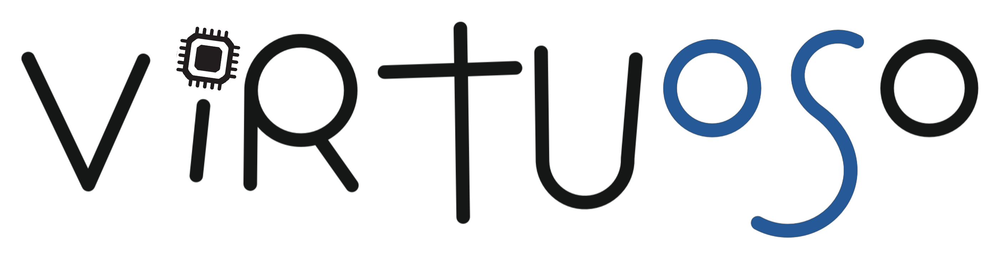

Infrastructure for Evaluating
Novel HW/OS Interfaces
A full-day workshop and tutorial on the principles, methodologies, and practical aspects of hardware/OS co-design for memory management
Location: Room 1, Lotte Hotel, Seoul, South Korea.
About the Workshop & Tutorial
Traditional computing systems face significant challenges due to rigid interfaces between hardware and operating systems (OS). These interfaces struggle to meet the performance, efficiency, and security demands of modern applications. For example, the growth in data requirements has turned virtual memory (VM) into a major performance bottleneck.
This has led to a paradigm shift towards hardware/OS co-design, where hardware components and OS mechanisms are designed in tandem to optimize the system. This tutorial and workshop will provide a comprehensive introduction to this area, focusing on memory management.
A core component will be a hands-on exploration of Virtuoso, a new simulation framework that enables rapid prototyping and evaluation of HW/OS co-designs. Published at ASPLOS 2025, Virtuoso provides a practical environment for attendees to experiment with co-design strategies and gain practical skills. The workshop is designed for students, engineers, and researchers in computer architecture and operating systems.
Organizers
Konstantinos Kanellopoulos
ETH Zürich
Konstantinos Kanellopoulos is a 5th-year PhD candidate at ETH Zurich, advised by Prof. Onur Mutlu. His research interests are at the intersection of hardware, software, and operating systems, focusing on performance, programmability, and security. More info on his webpage.
Prof. Onur Mutlu
ETH Zürich
Onur Mutlu is a Professor of Computer Science at ETH Zürich. His research focuses on designing fundamentally energy-efficient, high-performance, and robust computing systems, with an emphasis on computer architecture, hardware security, and memory systems. He is an ACM Fellow, IEEE Fellow, and has received numerous honors and awards. He is passionate about making research and education widely accessible. More info on his webpage.
Speakers & Presentations
Call for Presentations of On-going Work
We invite submissions for presentations of early and on-going work.
- Extended Abstract Submission Deadline: 25th September 2025
- Notification: 28th September 2025
Submissions should be up to 2 pages in length, in PDF format and you can use any standard conference template. The submission should include a title, authors and affiliations. The goal is to share early-stage research ideas and receive feedback during the workshop.
Submissions should be sent to virtuosomicro25@gmail.com.
Invited Speakers
In addition to the tutorial on Virtuoso, we will have invited talks from researchers working on topics related to OS/hardware interface. The list of speakers includes:
TBD.Presentations
TBD.Hands-On Demonstration Plan
The goal of the demo is to provide attendees with a practical, hands-on experience using Virtuoso to prototype and evaluate hardware/OS co-design techniques for memory management. The demo is divided into several parts:
Part 0: Demo Environment Quickstart (25-30 mins)
This part will familiarize attendees with the Virtuoso environment. Activities include a recap of Virtuoso's architecture, an introduction to the Virtuoso+Sniper and Virtuoso+Ramulator simulators, and a walkthrough of how to compile and run a basic simulation.
Part 1: Guided Implementation of Co-design Techniques (~2.5 hours)
Attendees will actively modify code to implement two hardware-OS co-design techniques:
- Efficient Address Translation: Implement a "Translation Cost-aware Large Page Allocation" policy where the OS uses hints from hardware to make smarter page-size decisions.
- Reducing Memory Allocation Latency: Implement an OS module that works with a new hardware interface to pre-allocate free pages, removing memory allocation from the critical path.
Part 2: Exploring Virtuoso's Agility and Flexibility (~1 hour)
This section will feature live demonstrations showcasing how Virtuoso enables rapid prototyping of complex OS features (like swap space support) and its flexibility in interfacing with different simulators like Ramulator.
Part 3: Wrap-up & Advanced Topics Teaser (10-15 mins)
A quick recap of the demonstrated techniques and a teaser of other co-design areas Virtuoso can explore, such as security, energy efficiency, and heterogeneous memory systems.